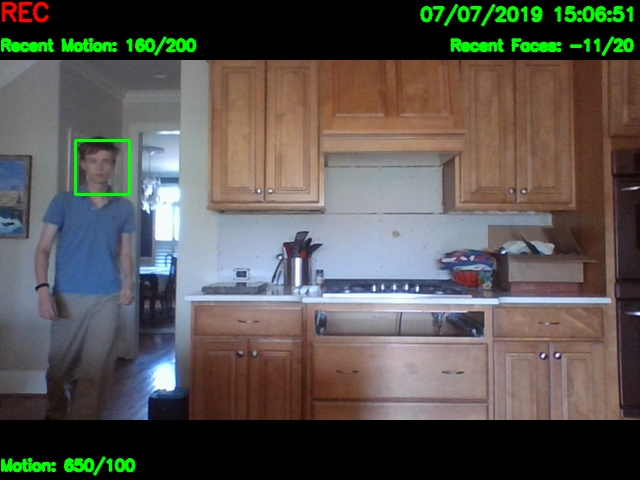

Linear Algebra Library
I originally started working on this project in highschool to practice array manipulation in preparation for the AP Computer Science A exam. My main goal at that point was to be able to find the reduced-row echelon form of a given array of doubles, allowing me to solve linear systems of equations.
As my knowledge grew regarding object-oriented programming and the applications of matrices to structures like networks, so did this project. I added a "Vector" class where one could determine vector information (e.g., cross-product and dot-product) or use these Vectors to populate a Matrix. One major change I made was making the "Matrix" class generically-typed, with "BinaryMatrix" and "NumericMatrix" extending the Matrix class and adding additional data type-specific functionality. For example, a specific application of the BinaryMatrix class is the ability to represent and determine qualities (e.g., reflexive, transitive, trichotomous) of binary relations; the DoubleMatrix class can solve linear systems of equations like originally intended.
I also learned the importance of unit testing and code coverage. Currently, all fully-implemented classes have 100% method coverage, at least 90% line coverage, and all tests passing. I will continue to add more unit tests and maintain high coverage as I implement greater functionality.
Below is a recent coverage report. All concrete classes, except
those in the graph package and NumericMatrix, have more than 95%
line coverage. Classes in the graph package are not yet ready for a
round of testing, and NumericMatrix may soon be deleted, depending
on whether this library will support matrices of non-numerical
values. 
In the future, I want to continue adding functionality for important objects in mathematics and computer science that are commonly represented as matrices. This includes items like Markov Chains and graphs. I am especially excited about developing weighted and directed graphs (digraphs) for applications like pathfinding and optimization.
Code and JavaDoc for the Linear Algebra library is available here.
Rubik's Cube Solver
One of my favorite hobbies is solving Rubik's Cubes and other twisty puzzles (a.k.a. cubing). I started by learning how to solve the 3x3x3 (Classic), which I can now solve in less than one minute. My collection of twisty puzzles has since grown to also include a 2x2x2 (Mini), 4x4x4 (Rubik's Revenge), a 5x5x5 (Professor's Cube), a tetrahedral puzzle (Pyraminx), and a dodecahedral puzzle (Megaminx), shown below.

I decided to combine my hobbies of cubing and Java programming into a program that would represent, manipulate, and solve virtual twisty puzzles. Currently, the project can only represent and manipulate 3x3x3 and 2x2x2 puzzles, but due to the object-oriented structure of the project, support for larger cubes could readily be added. I am focusing on writing a solving algorithm for the 3x3x3. Although the 2x2x2 may seem like a better place to start working because it is smaller and easier to solve than the 3x3x3, the solving method used by humans to solve the 3x3x3 applies more generally to larger cubes.
Right now, my 3x3x3 algorithm can complete any solvable 3x3x3 cube where the first two layers are already finished. These final two steps are known to cubers (Rubik's Cube solvers) as OLL (orient last layer) and PLL (permute last layer). I am having trouble adding previous steps due to the sheer number of different possibilities in completing these steps. For example, the first step in most Rubik's Cube solving strategies is to properly align the four edge pieces on the bottom face, which creates a cross shape. Although this is a relatively simple task, it's difficult to properly account for every case in an efficient way because aligning one edge could undo previous work. I may need to re-evaluate my solving strategy to make it more programming-friendly.
After I successfully complete the 3x3x3 solving method, I plan to work on other sizes. Larger-sized cubes can have an additional step after OLL and PLL called "parity" that can happen due to edges being more than one cube-unit (cubie). Having worked on solving algorithms for at least the Mini, Classic, and Revenge puzzles, I want to create a visual user-interface, where users can solve various-sized cubes for themselves. Given how visual the process of solving a Rubik's Cube is, for beginners and experts alike, this is an important step in making a mature, enjoyable piece of software.
Code and JavaDoc for the Rubik's Cube solver is available here.

Personal Website
I created INSERT DOMAIN HERE because I felt that my front-end development skills were lacking. Front-end development is taught (if at all) in most computer science curriculums as an afterthought. However, I believe that just as students are taught to make clean, legible, and well-documented code through comments and programming paradigms (like object-oriented), they should also be taught how to make clean, navigable, and intuitive front ends. After all, this is the portion of a product with which most end-users will interact.
INSERT DOMAIN HERE is meant to meet these design criteria and to be a place to talk about myself and my experience more in-depth than in a resume. Although I wrote every line of HTML, CSS, and JavaScript myself, I took parts from online resources like YouTube tutorials and Web Developer sites.
Although you are already viewing the website, all the code is available here.

Computer-Generated Images
Visuals have always been an effective and fun way for me to learn, especially when the topic is abstract. The tkinker, turtle, and Pillow Python GUI libraries allow for simple image manipulation, down to the pixel level.
For example, the left image below visualizes how numbers change after a given number of iterations in the unsolved Collatz conjecture; it has been my phone background for several years. For a more artistic visualization, see the right image below, which applies a smeared watercolor effect.


One can also visualize more useful and common mathematical ideas. The left image below shows how horizontal and vertical lines in the complex plane are transformed under e^(1/z). One can clearly see concentric cardioids. The right image below shows the graph of several common functions, like sine and the natural logarithm.

The Turtle library allows one to trace out colored paths in an image, like the rainbow spiral no the left below. Getting a little more advanced, one can create recursive shapes, like the Koch Snowflake, Serpinski Triangle, and dragon curve, shown below.


One can also make other startlingly complex images from a simple set of recursive rules. The below images, known colleteively as "strange attractors," show a tree, Barnsley Fern, pine branch and piece of tall grass. The procedural generation techniques used to create these images, known as L-systems, are used in many of today's popular video games to make random, realistic terrain and plants.


The images above and many others that I made in Python, as well as the code used to create them, are available on GitHub here. Code and results for this and other Python projects are available on GitHub here.
Computer Vision Security Program
This application started when my high-school engineering class had just moved into a larger building. It was common for expensive tools to get lost or stolen, so we needed a way to find these items and identify any culprits.
Although the new building already had some installed security cameras, there were still many blind spots, and footage could only be saved up to one week, meaning that if a tool were discovered missing after one week had passed, the traditional security cameras would not be useful in recovering it. My solution was to use Raspberry Pi's, which are small, cheap, and single-board computers, as "smart"" security cameras. These devices would be cheaper and easier to install than traditional cameras, and they could be more easily moved to another location if needed.
My first goal was to cut down on the storage space needed for footage without sacrificing picture quality or other valuable information. My solution was for the smart cameras to record video only when they detect motion. This way, disk space wouldn't be wasted on recording hours of the exact scene, but would still catch thieves as they walked into view.
This method worked extremely well. In many cases, hours of video was cut down to mere minutes. However, changing lighting conditions throughout the day could add noise to the image that would be mistaken for motion. I decided to fix this problem by having a threshold for motion that could be calibrated and changed automatically throughout the day. However, I wanted to make sure thieves would still be recorded, regardless of the lighting conditions. This is where computer vision came to my aid. Using Python's OpenCV library, I searched the video feed for faces. If any faces were detected, a green rectangle would be drawn around the face in the video feed, an image of the frame containing the face would be saved, and the camera would wait to recalibrate until no faces were detected.
Taken from the camera's results is an image below of me walking through the frame, the camera has seen my face and is recording video. 
Code and results for this and other Python projects are available on GitHub here.
Automated Google Drive & Gmail
This project is a continuation of the smart security camera. I wanted to use the Raspberry Pi's wireless internet capabilities to upload daily images and video to a Google Drive folder. I also wanted the cameras to provide daily email summaries of what they had seen and to alert the owner of any suspicious activity with attached evidence, like detecting a face after hours.
Using the PyDrive
library, I was able to upload video and images to a specified
GoogleDrive folder, like the one shown below. The movement of
potential evidence of theft to cloud storage meant that the
security camera didn't need more than a single day's storage
capacity, as long as they had internet access. Further, evidence
could less easily be tampered with or destroyed in a Google Drive
folder as opposed to being stored locally on the camera. 
Using Python's smptlib and email libraries, I was able to send basic summary emails with
attached documents to any number of email addresses, as shown
below. The security camera code could be modified to set times to
send an email alert. The email portion of this project has
application outside the smart security camera. It could be used
similarly to other automated email services and could be triggered
by almost any event. 
Code and results for this and other Python projects are available on GitHub here.
Multivariable Calculus Summary "Textbook"
While taking a summer physics class dealing with Maxwell's Equations, which are written in the language of multivariable calculus, I realized how much of the subject I had forgotten, despite taking a multivariable calculus class (Calc III) only nine months earlier. I also knew that several of my friends who would be taking Calc III in the coming semester had already requested my advice about the class or to look at my handwritten notes, but I like to have my notes as a reference.
I decided to digitize my notes using LaTeX in a textbook structure: chapters with sections and sub-sections. I would also add better visual aids than my hurriedly-made sketches using images from textbooks and other online resources. This way, I could more easily share clear, legible notes, keep the original, and refresh my understanding in the process. By the time I was finished, I had condensed the several-thousand page textbook into an 81-page guide that still contained scores of visual aids and many full-length proofs. I feel much more confident in my abilities, and I think my friends will be able to learn from me much more easily.